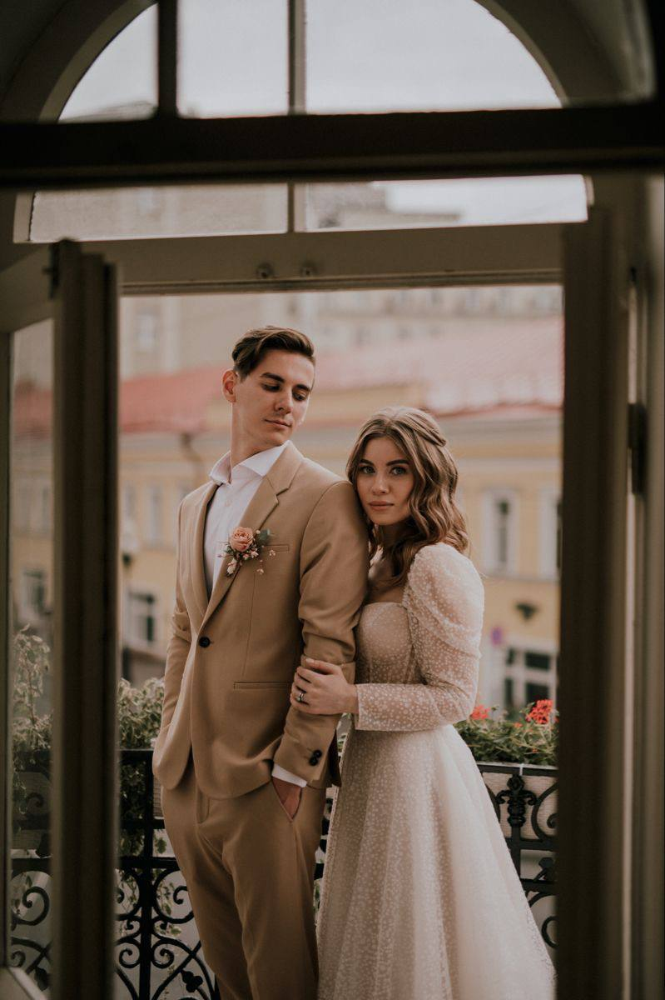
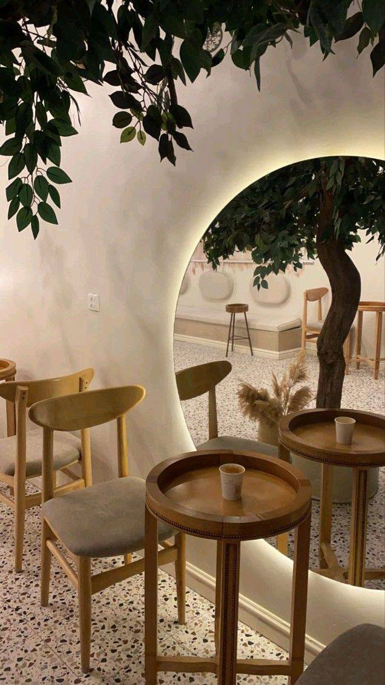

 Супружеская пара Евгений и Марина очень любят кофе. Они попробовали кофе в каждом заведение Москвы и создали рецепт, отличающийся от всех остальных. Так и появилась кофейня "Coffe-shop".
 Процесс создания своего собственного пространства был не самым простым. Марина и Евгений очень долго выбирали место, делали ремонт, заказывали материалы и продукты. Преодолев все препятствия, они открылись для нас.
Сегодня Coffee-shop - это не просто магазин, а целое сообщество добрых людей. Команда постоянно работает над созданием новых напитков, вдохновляясь природой, культурой и традициями разных стран.
К началу